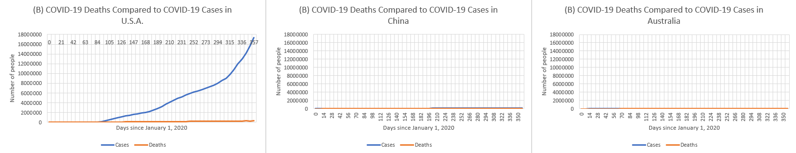

Exponential Outbreak
The first graph shown above represents the comparison of the amount of COVID-19 deaths and the number of COVID-19 cases. The number of deaths is noticeably smaller on the graph. Even though the number of deaths looks very small on the graph, there are 332,423 people dead from COVID-19. Looking at the graph of the coronavirus statistics, you can wonder: Have other countries done better? I think that other two countries have been more successful than the United States in controlling the number of COVID-19 cases and deaths.
The second graph above shows the comparison of COVID-19 deaths and COVID-19 cases in China. Compared to the graph of the United States, China handled the situation much better. Both cases and deaths for China are notably smaller than that of the United States, but we should compare China and America to one other country.
The final graph above compares the number of COVID-19 deaths compared to the number of COVID-19 cases in Australia. This country’s numbers are even better than China’s. It is shown by the fact that the line on the graph falls closer to the x-axis, compared to the U.S.A. graph where the the cases and deaths continue to rise.
The hypothesis (I think that other two countries have been more successful than the United States in controlling the number of COVID-19 cases and deaths) was correct. There are multiple thing that need to be taken into consideration when comparing the COVID-19 response of the U.S, China, and Australia. Roosa Tikkanen, Gabriella Aboulafia, and Reginald Williams II have researched all about these aspects and written about them in "How the U.S. Compares to Other Countries in Responding to COVID-19: Populations at Risk, Health System Capacity, and Affordability of Care | Commonwealth Fund". The first factor to consider is the percentage of the population at risk. In Australia, 19.5% of adults above the age of 65 are at risk. In China, 13.1% of adults above 65 are at risk. In the United States, 19.9% of adults above the age of 65 are at risk. The United States has a larger percentage of older adults at risk than the other two countries. The next aspect to consider is the healthcare system’s capacity to manage and diagnose patients. Data shows that in the United States, workforce and hospital bed capacity is lower than China and Australia. However, the U.S. does have a greater ability to provide CT scans for diagnosing COVID-19. While the United States has more machines, you need to take affordability into account. About 30 million Americans are uninsured, while 44 million more Americans are unable to afford hospital bills even with insurance. Australia and China have a smaller number of people with this problem.